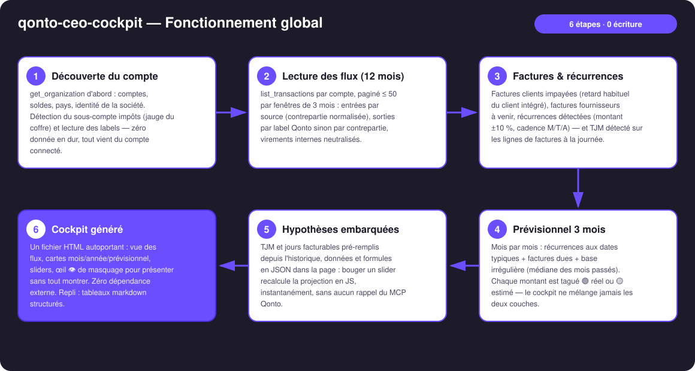
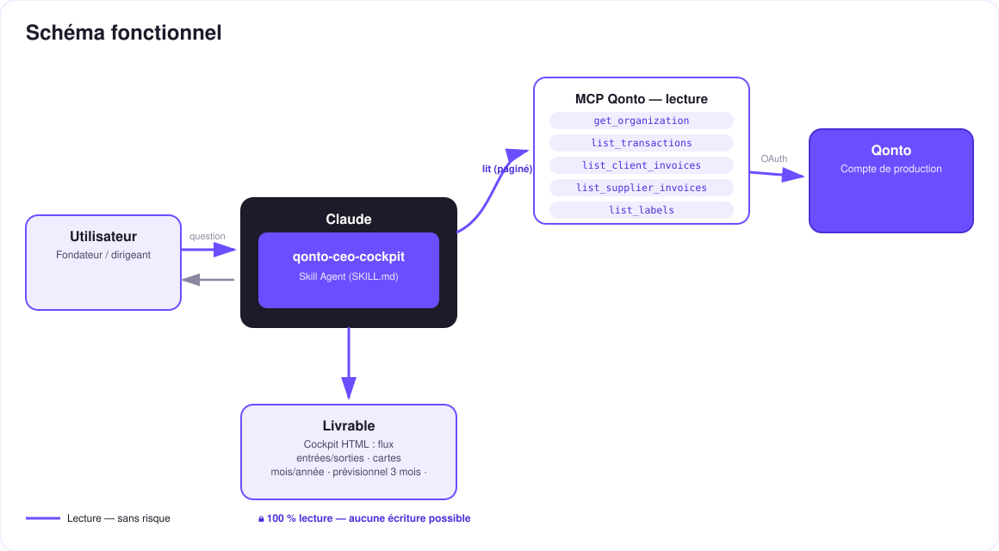

« My Société » — le cockpit du dirigeant, généré à la volée depuis le compte Qonto.
Ta banque te montre une liste de lignes. Pour voir ta boîte — d'où vient l'argent, où il va, où tu seras dans 3 mois — il faut un tableur… ou 3 semaines d'expert-comptable. Le skill fait ça en un prompt : « montre-moi ma boîte » → un dashboard HTML interactif et autoportant :
Sources de revenus → société → postes de dépenses (type Sankey), rubans ∝ montants, bascule mois/année, tooltips.
Mois / année / prévisionnel par poste + KPI : solde consolidé, résultat du mois, coffre fiscal, 3 mois — 🟢 réel / 🟡 estimé.
TJM détecté sur les factures × jours facturables : sliders, recalcul instantané dans la page — zéro rappel du MCP.
Un clic masque un poste sensible et recalcule les totaux — pour présenter sans tout montrer (rendez-vous banquier).
| Prérequis | Détail | Obligatoire |
|---|---|---|
| Compte Qonto production | Le skill s'adapte à toute organisation — get_organization d'abord, zéro donnée en dur | ✅ |
| Pays | Cœur universel : flux, cartes et prévisionnel marchent dans tous les pays Qonto ; seuls les libellés fiscaux sont affinés pour la France, libellé neutre ailleurs | ℹ️ détecté |
| MCP Qonto connecté | Connecteur officiel (claude.ai / Claude Desktop), login OAuth | ✅ |
| Labels Qonto | Clé de regroupement des postes (les catégories cash-flow renvoient 403 sur le connecteur) ; sans labels : contreparties normalisées | ⭕ recommandé |
| Historique ≥ 6 mois | En dessous : prévisionnel dégradé honnêtement (tags 🟡 + avertissement) | ⭕ |
| Facturation à la journée | Nécessaire au panneau TJM ; sinon panneau omis, raison affichée | ⭕ |


100 % lecture seule : aucune écriture, aucun virement, rien à approuver. Le livrable est un fichier HTML local et autoportant — les données ne quittent pas la machine, aucun code externe ne se charge. Le masquage 👁 est une commodité de présentation (les données restent dans la source du fichier) ; pour partager, le skill régénère un export où les postes masqués sont réellement exclus.
| Zone | Contenu | Source | Interactif |
|---|---|---|---|
| Vue des flux | Sources → société → postes, rubans ∝ montants | Transactions 12 mois, labels | Bascule mois/année, survol, clic → carte détail |
| KPI | Solde consolidé · résultat du mois · coffre fiscal · prévisionnel 3 mois | Soldes + flux + sous-compte impôts | Recalculés selon les postes masqués |
| Cartes par poste | Mois / année / prévisionnel, badges de cadence, tags 🟢🟡 | Flux + récurrences + factures | Œil 👁 de masquage par carte |
| Panneau hypothèses | TJM × jours facturables (3 mois + reste de l'année) | TJM détecté sur les factures | Sliders, recalcul live sans MCP |
| Sortie | Format | Quand |
|---|---|---|
| Dashboard interactif | Un seul fichier HTML autoportant : CSS/JS inline, zéro dépendance externe (CSP-safe), barres/rubans en CSS+SVG pur, thème clair/sombre, charte violet/noir/blanc | Le livrable — si l'hôte affiche les fichiers (artifacts claude.ai, Claude Desktop, Claude Code) |
| Réponse dans la conversation | Tableaux markdown : KPI, flux mois + année, prévisionnel 3 mois, scénarios TJM chiffrés | Repli automatique sinon |
| Export « présentation » | Le même HTML régénéré sans les postes sensibles dans les données | À la demande, pour partager |
La démo ≤ 3 min jointe à la PR suit le storyboard : le problème (une banque = une liste de lignes) → « show me my company » → le dashboard qui se construit → le slider TJM : +50 € et la projection annuelle bouge en live, sans appel API → l'œil qui masque un poste pour le banquier → wrap-up gamme. Tournée en live sur un compte de production réel.
| Idée | Effort | Note |
|---|---|---|
| Slots gamme : tax-pilot → jauge coffre + échéances, subscription-guardian → carte abonnements | Faible | Déjà prévu dans le SKILL.md — détecté dans la conversation, jamais requis |
| Comparaison N vs N-1 par poste (flèches de tendance) | Faible | L'historique 12 mois est déjà lu |
| Multi-devises consolidées | Moyen | get_organization expose les devises des comptes |
| Mode « conseil d'administration » : PDF imprimable | Faible | window.print() + CSS print, toujours zéro dépendance |
| Sliders embauche / salaire / gros achat | Moyen | Le moteur de recalcul JS est déjà en place (idée v3 de la maquette) |